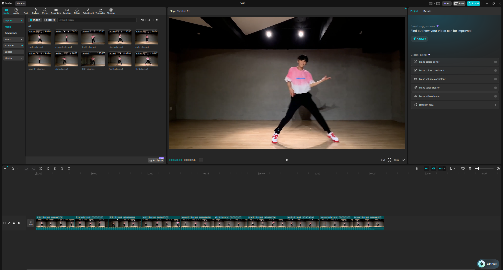
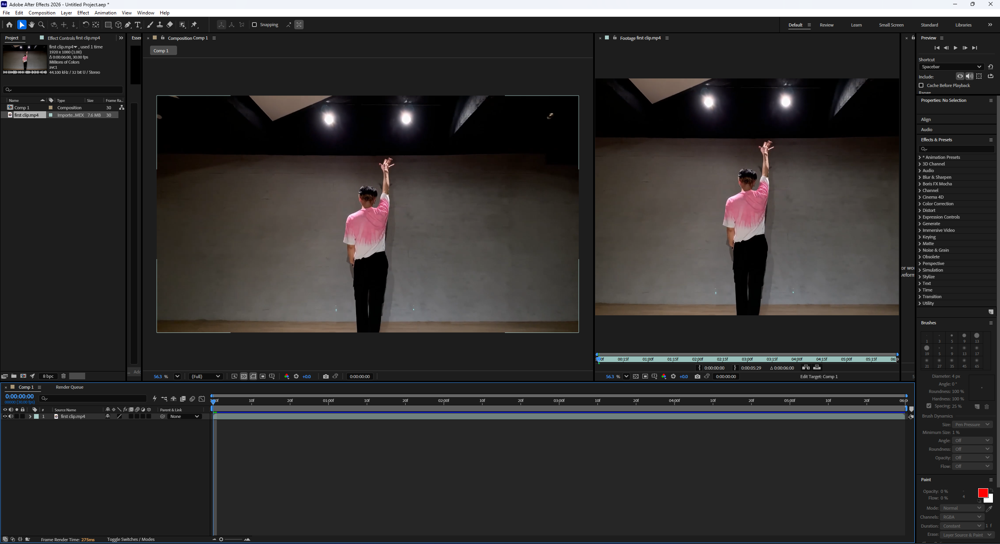
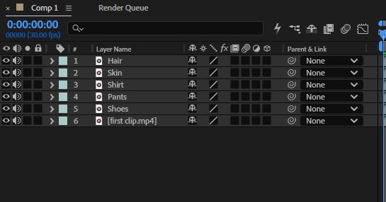
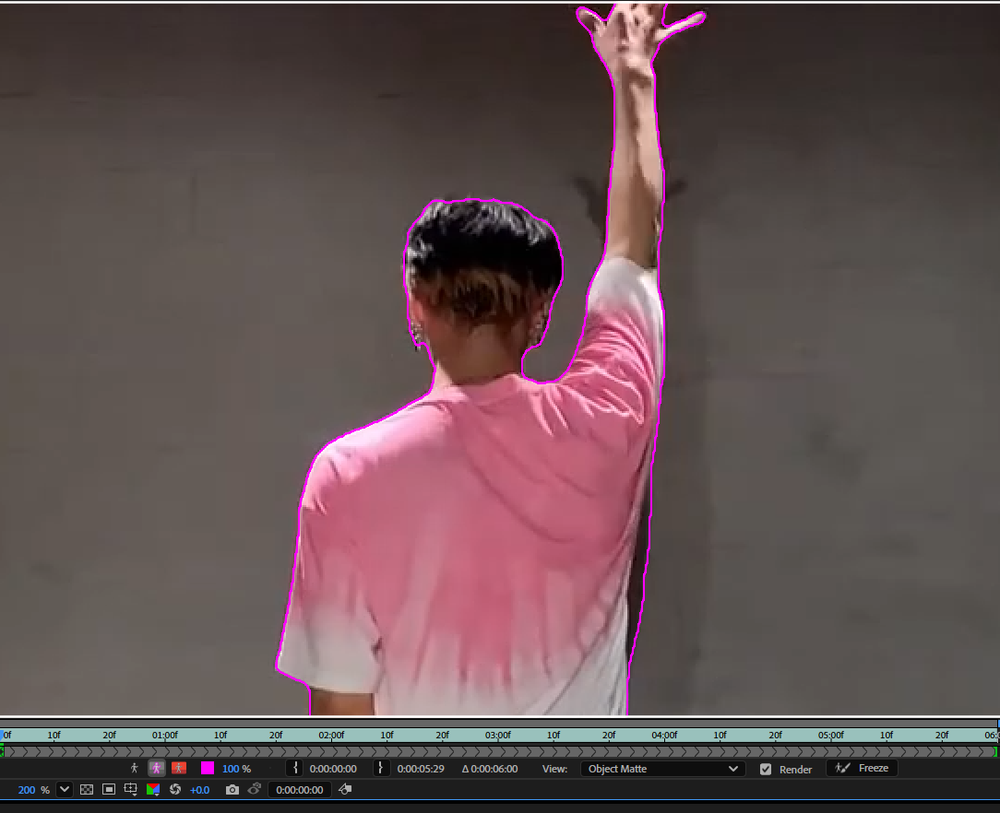
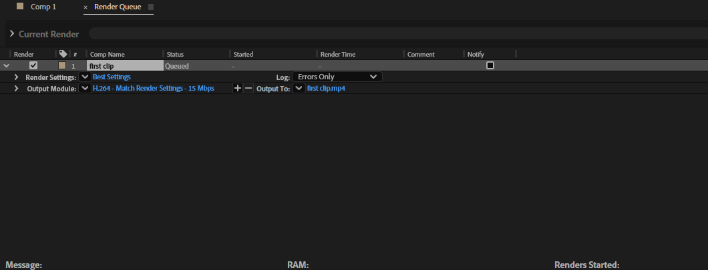

POST-PRODUCTION
ROTOSCOPING
Advanced frame-by-frame analysis and subject extraction. This project demonstrates surgical precision in rotoscoping to isolate organic motion from complex environments.
FINAL OUTPUT
REFERENCE VIDEO
DISCLAIMER: This material is used for academic purposes only. All rights and credits belong to the original owner(s).
TUTORIAL
STEP 01
REFERENCE
Find any reference video of your choice

STEP 02
Cutting by 5 second clips
Use Capcut and divide your clip into 5 seconds for smooth editing

STEP 03
Composition
Using Adobe After Effects, import your video and create a composition

STEP 04
Layer Duplication
Duplicate your main layer depending on how many body parts you want to include in your animation

STEP 05
Tracing Body Parts
Trace each body part per layer using your rotobrush on Adobe After Effects and add Fill colors to each bodypart

STEP 06
Rendering
Render your 5 second clip and wait until it is finished
TOOLS USED

Adobe After Effects
Used for advanced frame-by-frame masking and motion tracking to achieve surgical precision in rotoscoping.
Capcut
Employed for initial video cutting and final assembly of the rotoscoped segments into a fluid sequence.
Weekly Progress
WEEK 1 PROGRESS
WEEK 2 PROGRESS
WEEK 3 PROGRESS
WEEK 4 PROGRESS
WEEK 5 PROGRESS
WEEK 6 PROGRESS
WEEK 7 PROGRESS
WEEK 8 PROGRESS
WEEK 9 PROGRESS
WEEK 10 PROGRESS
WEEK 11 PROGRESS
WEEK 12 PROGRESS